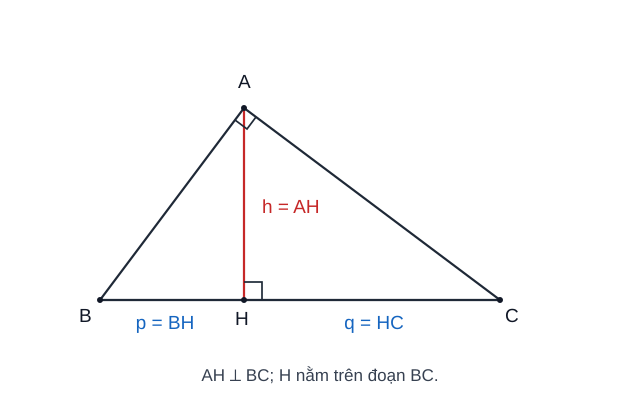
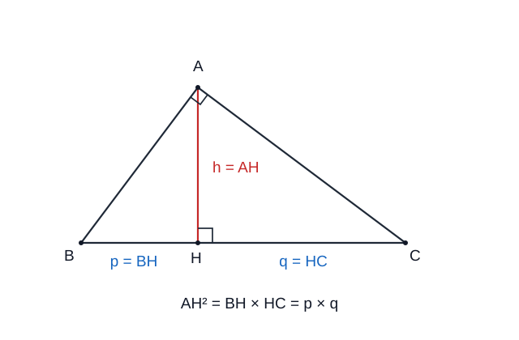
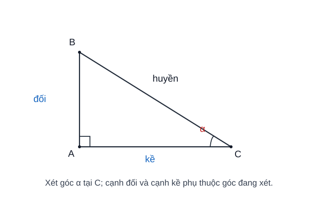
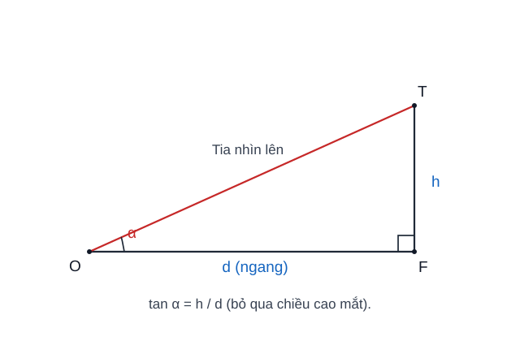
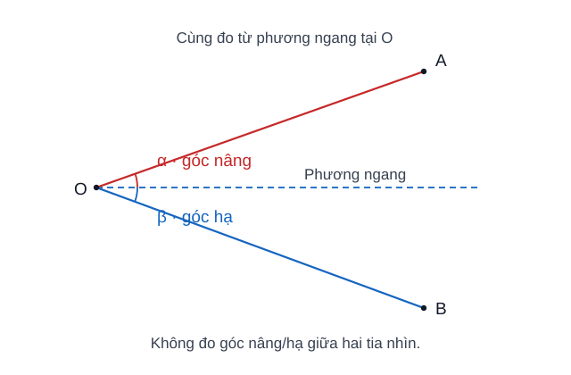
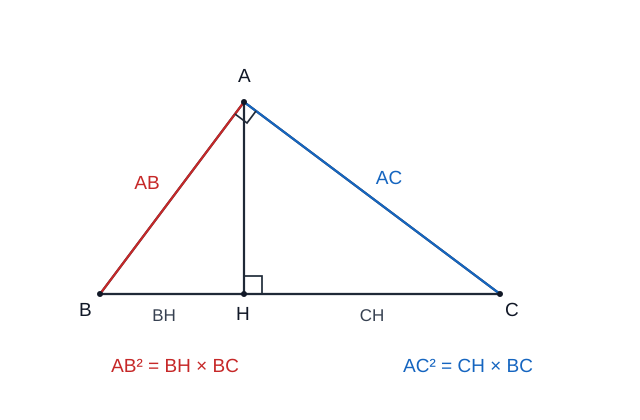
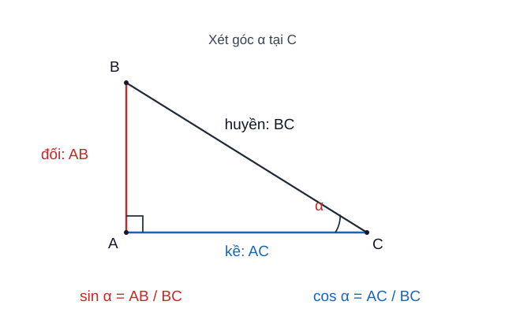
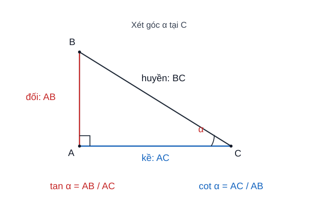
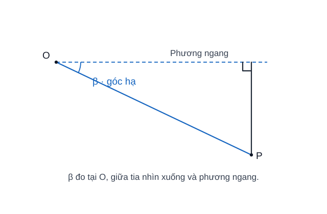

BẢN THỬ R12 — CHƯA PHÁT HÀNH: Sử dụng toàn bộ nguồn kiến thức đã kiểm định, chỉ điều chỉnh cách đọc, infographic và liên kết bài luyện; không tác động bài học chính thức.
Chuyên đề 18 – Hệ thức lượng trong tam giác vuông
Trạng thái: Đã kiểm định nội dung học thuật; cấu trúc Roadmap chuẩn 11 mục.
Lớp trọng tâm: 9 Mạch kiến thức: Hình học/Đo lường Mức ưu tiên: ⭐⭐⭐⭐⭐
🧭 1. Bản đồ kiến thức
HỆ THỨC LƯỢNG TRONG TAM GIÁC VUÔNG
│
├── Định lý Pythagore
│ └── a² + b² = c²
│
├── Đường cao xuống cạnh huyền
│ ├── cạnh góc vuông² = hình chiếu × cạnh huyền
│ ├── đường cao² = tích hai hình chiếu
│ └── tích hai cạnh góc vuông = đường cao × cạnh huyền
│
├── Tỉ số lượng giác
│ ├── sin = đối / huyền
│ ├── cos = kề / huyền
│ ├── tan = đối / kề
│ └── cot = kề / đối
│
└── Bài toán thực tế
└── góc nâng, góc hạ, chiều cao, khoảng cách
Mạch tư duy trọng tâm:
nhận ra tam giác vuông → chọn hệ thức phù hợp → lập công thức đúng → kiểm tra đơn vị và tính hợp lý.
Minh họa trực quan
1. Đường cao trong tam giác vuông

Xét tam giác vuông ABC, vuông tại A, đường cao AH hạ xuống cạnh huyền BC.
Các hệ thức quan trọng:
AB² = BH × BC
AC² = CH × BC
AH² = BH × CH
AB × AC = AH × BC
Khi bài toán có tam giác vuông và đường cao xuống cạnh huyền, nên nghĩ ngay đến nhóm hệ thức này.

2. Tỉ số lượng giác của góc nhọn

Với một góc nhọn α trong tam giác vuông:
| Tỉ số | Công thức |
|---|---|
| Sin | sin α = cạnh đối / cạnh huyền |
| Cos | cos α = cạnh kề / cạnh huyền |
| Tan | tan α = cạnh đối / cạnh kề |
| Cot | cot α = cạnh kề / cạnh đối |
Mẹo nhớ:
sin→ đối / huyền;cos→ kề / huyền;tan→ đối / kề;cot→ kề / đối.
3. Góc nâng và góc hạ


Góc nâng là góc tạo bởi tia nhìn lên và phương ngang. Góc hạ là góc tạo bởi tia nhìn xuống và phương ngang.
Dạng bài thường gặp:
- tính chiều cao của tòa nhà, cây, cột;
- tính khoảng cách từ người quan sát đến vật;
- tính độ cao khi biết góc nâng và khoảng cách ngang.
Ví dụ, nếu khoảng cách ngang đến chân tòa nhà là d, chiều cao cần tìm là h, góc nâng là α thì:
tan α = h / d
suy ra:
h = d × tan α
Bảng chọn công cụ nhanh
| Dấu hiệu trong đề | Công cụ nên nghĩ tới |
|---|---|
| Tam giác vuông có đường cao xuống cạnh huyền | Các hệ thức lượng |
| Biết góc và một cạnh, tìm cạnh khác | sin, cos, tan |
| Biết hai cạnh của tam giác vuông | Pythagore |
| Bài toán chiều cao / khoảng cách | Góc nâng, góc hạ + lượng giác |
Mẹo giải bài
- Vẽ hình trước khi thay số.
- Xác định rõ cạnh nào là đối, kề, huyền so với góc đang xét.
- Không dùng nhầm cạnh kề với cạnh huyền.
- Kiểm tra máy tính đang ở chế độ DEG khi góc cho theo độ.
- Với bài thực tế, nhớ cộng hoặc trừ chiều cao mắt người quan sát nếu đề có cho.
🎯 2. Mục tiêu cần đạt
Sau khi hoàn thành chuyên đề, học sinh cần:
- [ ] Nhớ và vận dụng được các hệ thức trong tam giác vuông có đường cao xuống cạnh huyền.
- [ ] Phân biệt đúng cạnh đối, cạnh kề, cạnh huyền theo góc đang xét.
- [ ] Dùng đúng
sin,cos,tan,cotvà quan hệ hai góc phụ nhau để tìm cạnh hoặc góc. - [ ] Kết hợp Pythagore và lượng giác trong cùng một bài.
- [ ] Giải được bài toán chiều cao, khoảng cách, góc nâng và góc hạ.
- [ ] Biết kiểm tra đơn vị và chế độ DEG trên máy tính.
📖 3. Kiến thức cốt lõi
3.1. Định lý Pythagore
Trong tam giác vuông có hai cạnh góc vuông a, b và cạnh huyền c:
a² + b² = c²
Định lý Pythagore đảo: nếu một tam giác có ba cạnh a, b, c, trong đó c là cạnh lớn nhất, và:
a² + b² = c²
thì tam giác đó vuông, với c là cạnh huyền.
3.2. Hệ thức với đường cao xuống cạnh huyền
Xét △ABC vuông tại A, AH ⟂ BC.
Ta có:
AB² = BH × BC
AC² = CH × BC
AH² = BH × CH
AB × AC = AH × BC
Ngoài ra:
BH + CH = BC
Đây là nhóm công thức cần thuộc và nhận ra nhanh.
Chọn đúng hệ thức: Nếu biết một cạnh góc vuông và hình chiếu của chính cạnh đó trên cạnh huyền, dùng AB² = BH × BC hoặc AC² = CH × BC. Nếu biết hai hình chiếu BH, CH, dùng AH² = BH × CH. Nếu biết hai cạnh góc vuông và cạnh huyền, dùng AB × AC = AH × BC. Không ghép nhầm AB với CH hay AC với BH.

3.2A. Hiểu và suy ra hệ thức đường cao (mở rộng)
Trong tam giác ABC vuông tại A, AH là đường cao xuống cạnh huyền BC. Ngoài các hệ thức ở mục 3.2, ta có thể tự suy ra:
1/AH² = 1/AB² + 1/AC².
Vì sao đúng? Diện tích tam giác vuông có thể tính theo hai cách, vì thế:
AB × AC / 2 = AH × BC / 2, tức AH = AB × AC / BC.
Suy ra:
1/AH² = BC²/(AB² × AC²).
Áp dụng Pythagore BC² = AB² + AC²:
1/AH² = (AB² + AC²)/(AB² × AC²) = 1/AB² + 1/AC².
Ví dụ có kiểm tra. Nếu AB = 6 cm, AC = 8 cm thì BC = 10 cm và AH = 6 × 8 / 10 = 4,8 cm. Kiểm tra:
1/AH² = 1/4,8² = 25/576 và 1/AB² + 1/AC² = 1/36 + 1/64 = 25/576.
Khi nào nên dùng? Khi biết hai cạnh góc vuông và cần đường cao, công thức AH = AB × AC / BC thường thuận tiện hơn; công thức nghịch đảo giúp liên hệ ba độ dài và tự kiểm tra kết quả. Đây là hệ quả suy ra từ kiến thức đã học, không phải công thức bắt buộc phải học thuộc thêm.
Điều kiện không thể bỏ: tam giác phải vuông tại
AvàAHphải là đường cao xuống cạnh huyền, nên các độ dàiAB,AC,AHđều dương.
3.3. Tỉ số lượng giác của góc nhọn

Với góc nhọn \(\alpha\), xác định cạnh đối, cạnh kề, cạnh huyền theo góc đang xét, rồi chọn tỉ số:
| Sin | Cos | Tan |
|---|---|---|
| \(\sin\alpha=\dfrac{\text{đối}}{\text{huyền}}\) | \(\cos\alpha=\dfrac{\text{kề}}{\text{huyền}}\) | \(\tan\alpha=\dfrac{\text{đối}}{\text{kề}}\) |
Từ đó có thể: - biết góc và một cạnh → tìm cạnh; - biết hai cạnh → tìm góc.
Chọn đúng tỉ số: Khi dữ kiện liên quan đến đối–huyền, chọn sin; kề–huyền, chọn cos; đối–kề, chọn tan. Nếu cần tìm góc từ hai cạnh, lập đúng tỉ số rồi dùng phím nghịch đảo; khi góc tính theo độ phải chọn chế độ DEG trên máy tính.
3.4. Quan hệ giữa các tỉ số

Với góc nhọn α:
sin² α + cos² α = 1
và khi cos α ≠ 0:
tan α = sin α / cos α
cot α = cos α / sin α
tan α · cot α = 1
Nếu α + β = 90° thì:
sin α = cos β,cos α = sin β;tan α = cot β,cot α = tan β.
3.4A. Giá trị lượng giác của các góc đặc biệt
| Góc | sin |
cos |
tan |
cot |
|---|---|---|---|---|
30° |
1/2 |
√3/2 |
√3/3 |
√3 |
45° |
√2/2 |
√2/2 |
1 |
1 |
60° |
√3/2 |
1/2 |
√3 |
√3/3 |
Không nhất thiết học bảng như bốn dòng công thức rời rạc: dùng quan hệ hai góc phụ nhau để kiểm tra chéo sin ↔ cos và tan ↔ cot.
3.5. Góc nâng và góc hạ

Trong bài toán thực tế: - góc nâng: tia nhìn hướng lên so với phương ngang; - góc hạ: tia nhìn hướng xuống so với phương ngang.
Ví dụ, với khoảng cách ngang d, chiều cao h, góc nâng α:
tan α = h/d
suy ra:
h = d × tan α
Nếu điểm quan sát cao hơn mặt đất, cần cộng hoặc trừ chiều cao mắt theo tình huống.
3.6. Bảng chọn công cụ
| Dấu hiệu | Công cụ |
|---|---|
| Biết 2 cạnh tam giác vuông | Pythagore |
| Có đường cao xuống cạnh huyền | Nhóm hệ thức lượng |
| Biết góc + 1 cạnh | sin, cos, tan |
| Biết 2 cạnh, cần tìm góc | Lập tỉ số lượng giác rồi dùng phím nghịch đảo (sin⁻¹, cos⁻¹, tan⁻¹) trên máy tính |
| Bài chiều cao / khoảng cách | Góc nâng, góc hạ + lượng giác |
Lưu ý khi dùng máy tính: Nếu góc tính bằng độ, đặt máy ở chế độ DEG trước khi tính lượng giác hoặc dùng phím sin⁻¹, cos⁻¹, tan⁻¹ để tìm góc.
🔗 4. Kiến thức liên quan
- Kiến thức nên ôn trước: 14 – Tam giác, 17 – Thales và tam giác đồng dạng
- Liên hệ mạnh: tam giác vuông, Pythagore, đồng dạng.
- Chuyên đề sử dụng tiếp: 19 – Đường tròn, 20 – Hình học tổng hợp, 24 – Bài toán thực tế
🧩 5. Các dạng bài cần nắm vững
Dạng 1. Tính cạnh bằng Pythagore
Dạng 2. Tính đoạn bằng hệ thức đường cao
Nhận ra ngay cấu hình AH ⟂ BC trong tam giác vuông.
Dạng 3. Tính cạnh bằng sin, cos, tan
Chọn tỉ số chứa đúng cạnh đã biết và cạnh cần tìm.
Dạng 4. Tìm góc
Lập tỉ số lượng giác phù hợp, sau đó dùng phím nghịch đảo tương ứng (sin⁻¹, cos⁻¹ hoặc tan⁻¹) trên máy tính ở chế độ DEG.
Ký hiệu
sin⁻¹,cos⁻¹,tan⁻¹ở đây chỉ hàm lượng giác ngược, không phải nghịch đảo theo nghĩa1/sin,1/cos,1/tan.
Dạng 5. Bài góc nâng – góc hạ
Vẽ lại tam giác vuông từ tình huống thực tế rồi mới thay số.
Dạng 6. Bài tổng hợp
Kết hợp Pythagore, đồng dạng và lượng giác để tìm nhiều đại lượng liên tiếp.
🚀 6. Dạng bài thi vào lớp 10
Trong Roadmap ôn thi vào lớp 10, đây là chuyên đề có mức ưu tiên rất cao cho cả hình học và các bài toán thực tế có mô hình tam giác vuông.
Các kỹ năng cần chắc: 1. Nhận diện đúng tam giác vuông và cạnh huyền. 2. Dùng hệ thức đường cao để tính đoạn. 3. Dùng lượng giác để tìm cạnh hoặc góc. 4. Giải bài chiều cao / khoảng cách. 5. Kết hợp lượng giác với đường tròn và hình học tổng hợp.
Mức ưu tiên ôn thi: ⭐⭐⭐⭐⭐.
⚠️ 7. Lỗi sai thường gặp
| Lỗi sai | Cách tránh |
|---|---|
| Nhầm cạnh đối và cạnh kề | Xác định theo góc đang xét |
Dùng cạnh huyền trong tan |
tan = đối/kề, không có cạnh huyền |
| Dùng sai hình chiếu trong hệ thức | Gắn đúng cạnh góc vuông với hình chiếu của nó |
Quên BH + CH = BC |
Ghi cấu hình đầy đủ trước khi tính |
| Máy tính để RAD | Chuyển sang DEG |
| Quên chiều cao mắt | Đọc kỹ mô hình thực tế |
| Làm tròn quá sớm | Giữ đủ số đến bước cuối |
📝 8. Luyện tập
Phần luyện tập chính đã chuyển sang Practice Room để tách rõ Core với Entrance10/Challenge và ghi learner evidence theo skill.
✅ 9. Tự kiểm tra
Sau khi luyện, làm Core Readiness Check 10 câu. Kết quả là soft mastery: dùng để gợi ý ôn lại, không khóa lộ trình.
🔄 10. Liên kết Roadmap
- ← Trước: 14 – Tam giác, 17 – Thales và đồng dạng
- → Tiếp theo: 19 – Đường tròn
-
→ Liên hệ: 20 – Hình học tổng hợp, 24 – Bài toán thực tế
-
✏️ Luyện tập: Bài tập Chuyên đề 18
- ✅ Tự kiểm tra: Tự kiểm tra Chuyên đề 18
Xem toàn bộ hệ thống tại Blueprint 25 chuyên đề.
🏁 11. Điều kiện hoàn thành
- [ ] Đã học đủ 5 chặng KNTT Core ở đầu trang.
- [ ] Đã luyện Practice Room và chữa lại các câu sai.
- [ ] Đã làm Core Readiness Check; khoảng 80% trở lên là tín hiệu sẵn sàng.
- [ ] Mọi kết luận hình học dựa trên giả thiết/định lí, không dựa vào hình vẽ.
Soft Mastery
Kết quả không khóa chuyên đề tiếp theo; evidence yếu chỉ tạo gợi ý ôn đúng skill.